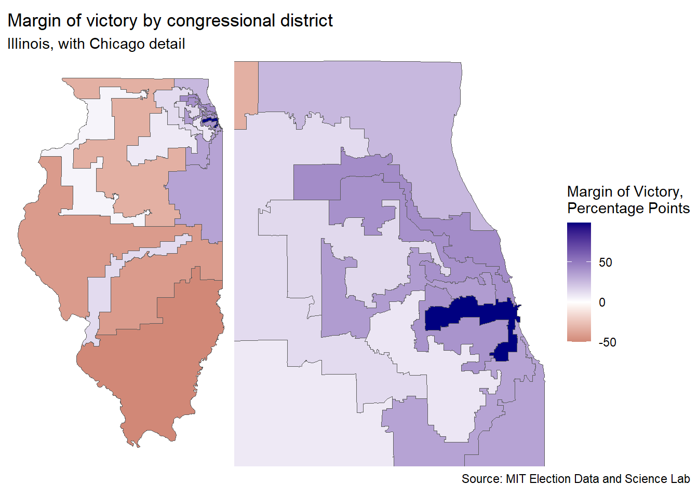

I am back for another #TidyTuesday! After the somewhat disappointing results I found in my last post, I was relieved to find that this week’s dataset is the US House Election Results from 1976-2022, as presented by the MIT Election Data and Science Lab (Data and Lab 2017).
While I am more of a health researcher, I’m always happy to put on my 538-hat1 and try my hand at political science. While the amount of coverage of elections in the US is certainly tiresome, it does give statisticians a lot of data to play around with, which, as a statistician who lives outside of a battleground state, is quite nice.
My non-battleground state is Illinois, which is famously a stronghold of the Democratic Party: as of writing, the last time the state voted for a Republican candidate was 35 years ago, in 1988! Since then, Illinois has only become more and more liberal. So why, then, am I exploring a state which has been, at least in presidential election terms, unexciting since Mikail Gorbachev led the Soviet Union?
Downstate, upstate, collar counties, and the like
Because, if you get under the hood of the seedy underbelly2 of Illinois politics, we find a very interesting situation. Illinois’ largest urban area is Chicago in Cook County, and Chicago is a large city3. Chicago is the state’s largest city, and it’s suburbs contain the 2nd, 3rd, 4th, and 6th largest cities by population. This has led to a lopsided population imbalance between the city of Chicago and it’s closest, oldest suburbs, the newer suburban counties surrounding Chicago, and the rest of the state.
All this is common knowledge, so to quickly explain everything: Chicago and Cook County are Chicago, the collar counties are the 5 counties which adjoin Cook County4, and ‘downstate’ is the remaining 96 counties in Illinois. Personally, I’m always astonished by the sheer size of Chicago, where so many people live that the majority of the state is simple ‘downstate’. This has led to the political dynamics that I’d like to explore today.
You see, the congressional districts in Chicago have almost always been democratic strongholds, those ‘downstate’ have been republican strongholds. The collar counties, however, containing those election-swaying suburban voters, tend to flip-flop. The votes of the collar counties are the reason why Republican candidates clung to hope in state elections as Illinois liberalized, such as Former Governor Bruce Rauner’s term from 2015 to 2019.
Picking through the data
Anyways, these intra-state dynamics, seemingly defined by an urban/rural divide between Chicagoland and downstate Illinois, are what make political studies within Illinois so interesting, since the only other state with a similar makeup is New York5. Without furtherado, let’s crack open the dataset. I have a very specific idea of the visualization I’d like to make, inspired by this dumbbell plot from the R Graph Gallery. I’d also like to make some maps, since I have been wanting to work more with R’s mapping/GIS capabilities. I know for a fact that a map of just Illinois will be insufficient, since the congressional districts of Chicago are quite famous for their gerrymandered complexity, so I’ll have to make an inset map. That’s two visualizations, so I’ll make those and call it a day.
knitr::opts_chunk$set(echo =TRUE)library(tidyverse) # for just about everythinglibrary(patchwork) # for stitching charts togetherlibrary(tidytuesdayR) # for loading the datalibrary(sf) # for making mapstuesdata <-tt_load('2023-11-07')
Downloading file 1 of 1: `house.csv`
house <- tuesdata$housemap <-read_sf("cb_2022_us_cd118_500k.shp")
Great, the easy part is complete! Now to narrow the data to just Illinois’ 2022 election results for the 118th Congress.
map <- map %>%filter(STATEFP ==17) %>%rename("district"="CD118FP") %>%# We'll match on this latermutate(district =str_remove(district, "^0+")) # remove all leading zeros# filter, reduce third party and write-in candidates into one category# this is the cleaning pipelinehouse_il <- house %>%filter(state_po =="IL"& year ==2022) %>%# narrow the datasetselect(-c(candidate, unofficial, version, # drop unneeded columns fusion_ticket, state_po, state_fips)) %>%mutate(district =str_remove(district, "^0+"), # remove leading zerodistrict =as_factor(district), # district needs to be factorparty =replace_na(party, "third_party"),party =as_factor(party),party =fct_other(party, # clean up third/write-in voteskeep =c("REPUBLICAN", "DEMOCRAT"),other_level ="Third Party"),percent =round((candidatevotes / totalvotes) *100,digits =2)) %>%group_by(district, party) %>%reframe(percent =sum(percent)) # collapse into three categories per district# make it wide, compute additional variables for plottinghouse_il_wide <- house_il %>%pivot_wider(names_from = party, values_from = percent) %>%rename("Democrat"="DEMOCRAT", # clean up names, at last"Republican"="REPUBLICAN") %>%mutate(gap =round(Democrat - Republican, digits =0), # compute gapchicagoland =as_factor( # flag all districts in Chicago metro areaif_else(district %in%c(1, 2, 3, 4, 5, 6, 7, 8, 9, 10, 11, 14),"Chicagoland", "Downstate IL"))) %>%group_by(district) %>%mutate(max =max(Democrat, Republican), # who had the best percent of the votemin =min(Democrat, Republican)) # this'll be useful for the plots# pivot back to long for easier plots, retain original for backup house_il_long <- house_il_wide %>%pivot_longer(c(Democrat, Republican, `Third Party`),names_to ="party",values_to ="percent")
Wow, those were some very long pipes! However, it was mostly cleaning and flip-flopping the data from long to wide to long again to compute the little bits and bobs that I’ll call on for the chart. I also added a variable for whether or not a district is in the Chicago metropolitan area, chicagoland, since this is the relationship I’d like to explore. It was also my first time using the reframe() function, and I must say I am a fan. Now, let’s make the dumbbell plot. My goal is to show the percent of the vote captured by each party, the margin of victory for the winner, and whether or not the district was in Chicagoland. Here’s what I came up with.
dumbbellplot <-ggplot(house_il_long, aes(x = percent, y = district)) +geom_segment(aes(x = min,xend = max,y = district,yend = district),color ="#E7E7E7",linewidth =3.5) +geom_point(aes(color = party), size =3) +geom_text(aes(label = percent, color = party),size =3.25,nudge_x =case_when( house_il_long$party =="Third Party"~1, house_il_long$percent == house_il_long$max & house_il_long$party !="Third Party"~1, house_il_long$percent != house_il_long$max & house_il_long$party !="Third Party"~-1, house_il_long$percent >95~-4), # this is nasty, but functionalhjust =case_when( house_il_long$party =="Third Party"~0, house_il_long$percent == house_il_long$max & house_il_long$party !="Third Party"~0, house_il_long$percent != house_il_long$max & house_il_long$party !="Third Party"~1)) +theme_minimal() +theme(legend.title =element_blank(),legend.direction ="vertical",legend.position =c(.90, .5), # legend within chart for detailaxis.text.y =element_text(color="black"),axis.text.x =element_text(color="#989898"),axis.title =element_blank(),panel.grid =element_blank(),strip.text =element_blank()) +labs(x ="%", y =NULL) +scale_color_manual(values =c("navy", "darkred", "#111111")) +scale_x_continuous(labels = scales::percent_format(scale =1)) +scale_y_discrete(limits = rev) +facet_grid(chicagoland ~ .,scales ="free_y")# this is just the dumbbell plot, I'll need another chart to add the margin# this will make the chart look a hair more detailed (e.g., +5D over 5)house_il_wide <- house_il_wide %>%mutate(gap_party_max =case_when(Democrat == max ~"D", Republican == max ~"R"),gap_label =if_else(is.na(gap), "No contest", paste0("+", abs(gap), gap_party_max)) %>%fct_inorder())gapcol <-ggplot(house_il_wide, aes(gap, district)) +geom_text(aes(0, label = gap_label, color = gap_party_max),fontface ="bold",size =3.25) +facet_grid(chicagoland ~ .,scales ="free_y") +scale_color_manual(values =c("navy", "darkred", "#111111")) +scale_y_discrete(limits = rev) +theme_void() +theme(plot.margin =margin(l =0, r=0, b=0, t=0),panel.background =element_rect(fill="#EFEFE3", color="#EFEFE3"),legend.position ="none",strip.text =element_text(angle =-90, vjust = .6))whole_chart <- dumbbellplot + gapcol +plot_layout(design =c(area(l=0, r=45, t=0, b=1),area(l=46, r=52, t=0, b=1))) +plot_annotation(title ="Margin of victory by congressional district",subtitle ="Chicagoland districts compared to 'downstate' Illinois",caption ="Source: MIT Election Data and Science Lab")whole_chart
Again, after a lot of painstaking code, and much work under the hood tweaking alignment and spacing, we have a plot that looks very good. Already, the dynamics are fascinating. The Democratic party is not only strong in Chicagoland, but dominates it. In the 7th district, the Republican party didn’t even put up a candidate! Downstate, things are different. the 12th, 15th, and 16th districts are very heavily leaned Republican, although the 13th is strongly Democratic, probably due to the presence of college-town Champaign6 and East St. Louis. In fact, the only district close to a battleground is the 17th, possibly because of the large swathes of rural areas and the Quad Cities setting up the district as the closest thing to a competition in the whole state.
I am quite pleased with this chart, but let’s make some maps to show another angle of the Chicagoland/downstate dynamics. This will allow us to see the impact of the collar-counties a bit better, and it will show how gerrymandering is still an issue in Illinois.
mapping_data <-full_join(map, house_il_wide, by ="district") # join map data state_map <-ggplot(mapping_data) +geom_sf(aes(fill =if_else(is.na(gap), 99.4, gap))) +scale_fill_gradient2(low ="darkred", high ="navy", midpoint =0, name ="Margin of Victory,\nPercentage Points") +theme_void()chi_map <-ggplot(mapping_data) +geom_sf(aes(fill =if_else(is.na(gap), 99.4, gap))) +coord_sf(xlim =c(-88.55, -87.5),ylim =c(41.5, 42.5),expand =FALSE) +scale_fill_gradient2(low ="darkred", high ="navy", midpoint =0, name ="Margin of Victory,\nPercentage Points") +theme_void()margin_map <- state_map + chi_map +plot_layout(guides ='collect') +plot_annotation(title ="Margin of victory by congressional district",subtitle ="Illinois, with Chicago detail",caption ="Source: MIT Election Data and Science Lab")margin_map

Perfect! We can almost see a gradient from the rural districts to the loop of Chicago. This suggests an association which I’m sure University of Chicago poly-sci undergradutes understand more deeply than I can imagine. We can also see the effect of gerrymandering, to some extent (why does the 13th, the pale blue district in the south, stretch 3/4 of the way across the state?) Illinois has been cleaning up it’s districts, thanks to a steady decline in population leading to redistricting, but it’s clear that there’s some work to be done.
Either way, that’s me for today. I could make all of these charts much, much better, like adding labels to the districts on the map, centering the Chicago inset instead of using the border with Wisconsin as an anchor and generally cleaning up fonts and spacing, but the hour is late, and I’d like to wrap up. This was a lot of fun, the amount of detail than can be sunk into each chart is nearly infinite, and I was happy to get some more experience working with maps. Till next time!
The album I listened to while picking apart the politics of Illinois was Illinois by Surfjan Stevens
As someone who gained political awareness, and then political agency, in the heated 2016 and 2018 elections, Nate Silver was a huge inspiration for a budding data scientist.↩︎
While this might be a potshot at Illinois’ famously corrupt politics, I’m going to cut my native state a bit of slack (for now).↩︎
Specifically, DuPage, Kane, Lake, McHenry, and Will County.↩︎
California comes close, but the urban/rural delineation is different due to the presence of multiple large urban areas (e.g., Los Angeles, San Francisco, San Diego, San Jose, etc. etc.), while New York and Illinois have one very, very large city.↩︎